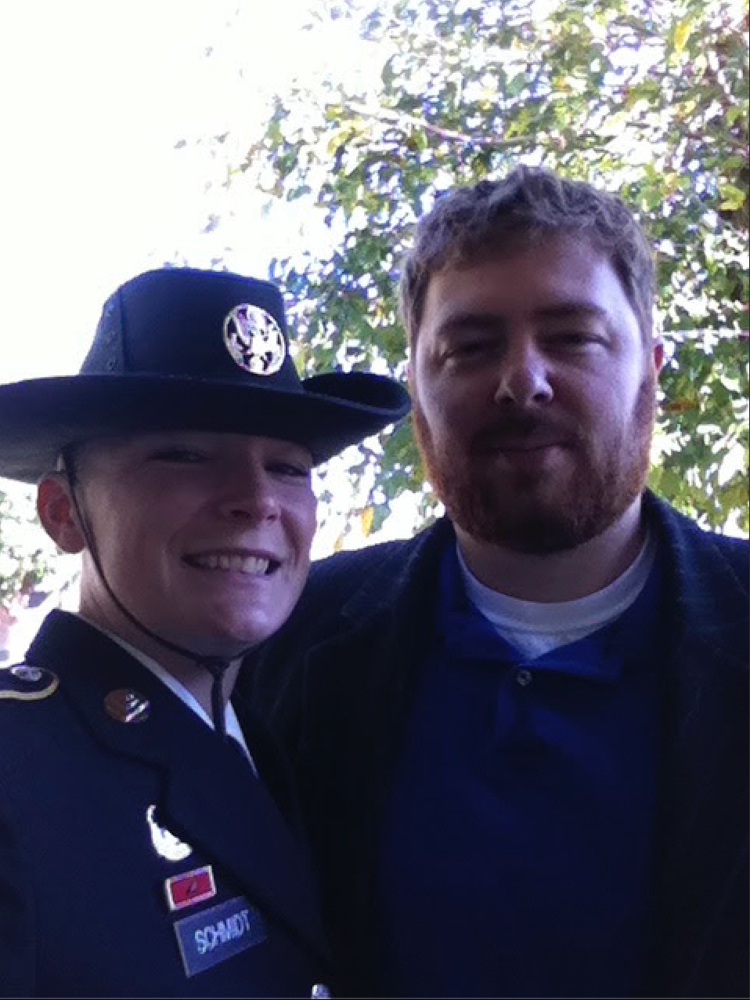
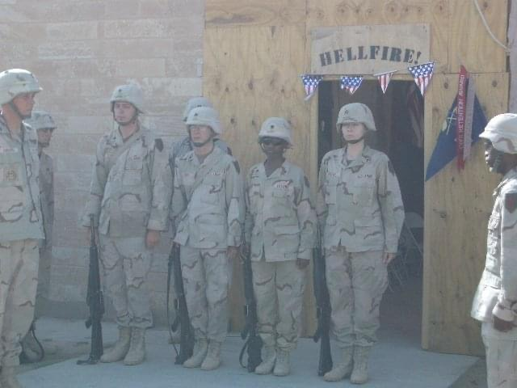

Dr. James Schmidt
Former Sergeant United States Army
He is great at research and advocating for veterans which he did a lot of after exiting the Army.
 
Links
Website detailing changes to seeking mental health care for soldiers transitioning
inTransition
How Male Veterans Experience Their Transition from the Military and Relearn Civilian Life
Linkedin
Achievements
Served in United States Army
Deployed to Iraq
Received Masters degree from University of Oklahoma
Received PhD from Saybrook University
Research the problems veterans face during the transition from leaving the military and the veteran suicide rate link
Presented research to U.S. Senate and congress Committees of Veteran Affairs and Armed Services Committees
Research was used to push for change in how mental health care is incorporated during the transition from military life